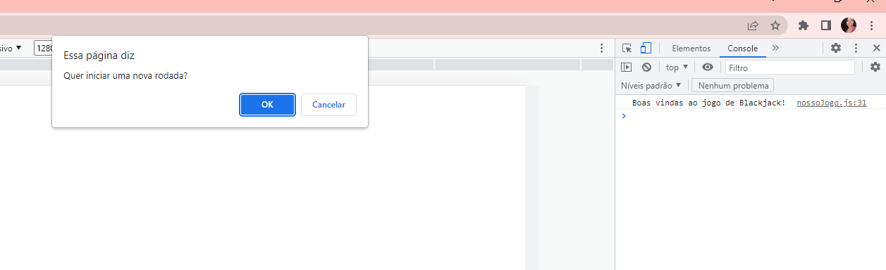
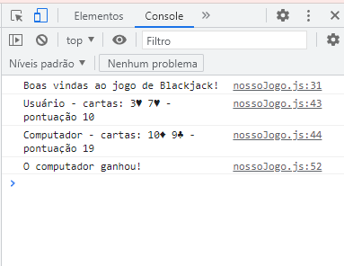

Por exemplo, uma carta do baralho é o dois de Paus (2♣️).
Existem 52 possibilidades de cartas diferentes (13 números e 4 naipes).
- Os jogadores compram cartas do baralho. Ao comprar uma carta do baralho, ela pode ser de qualquer uma das 52 cartas, com probabilidade igual.
- As cartas tem um valor de acordo com seu número (a carta 4♣️ tem valor 4, e a carta 9♦️ tem valor 9). As cartas J, Q e K tem valor 10, e a carta A tem valor 11.
- O jogo inicia com cada jogador (usuário e computador) recebendo 2 cartas. A pontuação de cada jogador é a soma do valor das suas cartas.
- O jogador com a maior pontuação ganha a rodada.
O projeto consistiu em criar um programa que:
1- Imprime uma mensagem no console "Boas vindas ao jogo de Blackjack";
2- Envia um confirm, perguntando ao usuário: "Quer iniciar uma nova rodada?";
3- Se o usuário responder cancel, imprime uma mensagem no console "O jogo acabou."
4- Se o usuário responder ok, o programa deve iniciar uma nova rodada.
- HTML
- CSS


